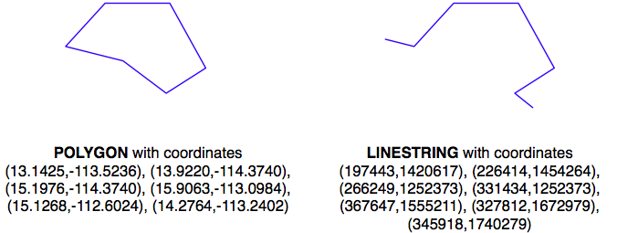
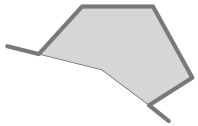

建议的最佳做法#
Recommended best practices
在本节中，我们将介绍一些可以采取的实际措施，以确保地理空间数据库尽可能高效、有效地运行。
In this section, we will look at a number of practical things you can do to ensure your geospatial databases work as efficiently and effectively as possible.
使用数据库跟踪空间参考#
Using the database to keep track of spatial references
正如我们在前几章中所看到的，不同的地理空间数据使用不同的坐标系统、基准面和投影。例如，考虑以下两个几何对象：
{kind=link}
几何体被表示为一系列坐标，这些坐标仅仅是数字。单独来看，这些数字并没有什么特别的用途——你需要通过识别几何体使用的空间参考（坐标系统、基准面和投影）将这些坐标定位到地球表面。
在这个例子中，POLYGON使用的是WGS84基准面下的未投影的纬度/经度坐标，而LINESTRING使用的是使用UTM Zone 12N投影定义的以米为单位的坐标。一旦知道了空间参考，就可以将这两个几何体放置到地球表面。这揭示了这两个几何体实际上是重叠的：
{kind=link}
在除最简单的数据库之外，建议你直接在数据库中为每个要素存储空间参考。这使得跟踪每个要素使用的空间参考变得更加容易。它还使得你编写的查询和数据库命令能够意识到空间参考，并使你能够根据需要在空间查询中将几何体从一个空间参考转换到另一个空间参考。
空间参考通常使用一个简单的整数值称为 空间参考标识符（SRID） 来表示。尽管你可以选择任意的SRID值来表示各种空间参考，但强烈建议你使用 欧洲石油勘探组（EPSG） 编号作为标准SRID值。使用这一国际公认的标准可以使你的数据与其他数据库互换，并允许像OGR和Mapnik这样的工具识别你的数据使用的空间参考。
要了解更多关于EPSG编号和SRID值的一般信息，请参考：
你之前已经见过SRID值。例如，在本章的使用SpatiaLite部分，我们遇到了以下SQL语句：
SELECT AddGeometryColumn('cities','geom',4326,'POLYGON',2)
值4326是用来标识特定空间参考的SRID，在这个例子中是WGS84经纬度参考（使用WGS84基准面的未投影的经纬度坐标）。
PostGIS和SpatiaLite都向你的空间数据库添加了一个特殊的表格，叫做spatial_ref_sys。这个表格预加载了超过3000个常用空间参考的列表，所有这些参考都由EPSG编号标识。由于SRID值是这个表格的主键，访问数据库的工具可以参考此表格，使用PROJ.4库进行实时坐标转换。即使你使用的是MySQL，尽管它不提供spatial_ref_sys表格或其他直接支持坐标转换的功能，但你也应该使用标准的EPSG编号作为空间参考。
请注意，所有三个开源空间数据库都允许你在从WKT导入时为几何体关联SRID值：
MySQL: GeometryFromText(wkt, [srid])
PostGIS: ST_GeometryFromText(wkt, [srid])
SpatiaLite: GeometryFromText(wkt, [srid])
虽然SRID值是可选的，但你应该尽可能使用它来告知数据库你的几何体使用的是哪个空间参考。事实上，如果一个列已经设置为使用特定的SRID值，PostGIS和SpatiaLite都要求你使用正确的SRID值。这可以防止你在一个表格中混合使用不同的空间参考。
As we’ve seen in earlier chapters, different sets of geospatial data use different coordinate systems, datums, and projections. Consider, for example, the following two geometry objects:
The geometries are represented as a series of coordinates, which are nothing more than numbers. By themselves, these numbers aren’t particularly useful—you need to position these coordinates onto the Earth’s surface by identifying the spatial reference (coordinate system, datum and projection) used by the geometry.
In this case, the POLYGON is using unprojected lat/long coordinates in the WGS84 datum, while the LINESTRING is using coordinates defined in meters using the UTM Zone 12N projection. Once you know the spatial reference, you can place the two geometries onto the Earth’s surface. This reveals that the two geometries actually overlap:
In all but the most trivial databases, it is recommended that you store the spatial reference for each feature directly in the database itself. This makes it easy to keep track of which spatial reference is used by each feature. It also allows the queries and database commands you write to be aware of the spatial reference, and enables you to transform geometries from one spatial reference to another as necessary in your spatial queries.
Spatial references are generally referred to using a simple integer value called a Spatial Reference Identifier (SRID). While you could choose arbitrary SRID values to represent various spatial references, it is strongly recommended that you use the European Petroleum Survey Group (EPSG) numbers as standard SRID values. Using this internationally-recognized standard makes your data interchangeable with other databases, and allows tools such as OGR and Mapnik to identify the spatial reference used by your data.
To learn more about EPSG numbers, and SRID values in general, please refer to:
You have seen SRID values before. For example, in the Using SpatiaLite section of this chapter, we encountered the following SQL statement:
SELECT AddGeometryColumn('cities','geom',4326,'POLYGON',2)
The value 4326 is the SRID used to identify a particular spatial reference, in this case the WGS84 Long Lat reference (unprojected lat/long coordinates using the WGS84 datum).
Both PostGIS and SpatiaLite add a special table to your spatially-enabled database called spatial_ref_sys. This table comes preloaded with a list of over 3,000 commonly-used spatial references, all identified by EPSG number. Because the SRID value is the primary key into this table, tools that access the database can refer to this table to perform on-the-fly coordinate transformations using the PROJ.4 library. Even if you are using MySQL, which doesn’t provide a spatial_ref_sys table or other direct support for coordinate transformations, you should be using standard EPSG numbers for your spatial references.
Note that all three open source spatial databases allow you to associate an SRID value with a geometry when importing from WKT:
MySQL: GeometryFromText(wkt, [srid])
PostGIS: ST_GeometryFromText(wkt, [srid])
SpatiaLite: GeometryFromText(wkt, [srid])
While the SRID value is optional, you should use this wherever possible to tell the database which spatial reference your geometry is using. In fact, both PostGIS and SpatiaLite require you to use the correct SRID value if a column has been set up to use a particular SRID. This prevents you from using mixing spatial references within a table.
使用适合您数据的空间参考#
Using the appropriate spatial reference for your data
当你将空间数据导入数据库时，它将使用特定的空间参考。这并不意味着它必须保持在该空间参考中。实际上，在许多情况下，将数据转换为适合你特定需求的空间参考会更加高效和准确。当然，“适当的”空间参考取决于你想要实现的目标。
除了PostGIS及其新的地理数据类型外，所有三个空间数据库都假定坐标存在于笛卡尔平面上——也就是说，它们使用的是投影坐标。如果你将未投影的坐标（纬度和经度值）存储在数据库中，那么你将会受到限制。肯定地说，你可以在数据库中使用未投影的地理坐标来比较两个要素（例如，查看一个要素是否与另一个要素相交），并且你可以快速存储和检索地理空间数据。然而，任何涉及面积或距离的计算几乎都是没有意义的。
例如，考虑一下如果你要求MySQL计算一个LINESTRING几何体的长度会发生什么：
mysql> SELECT GLength(geom) FROM roads WHERE id=9513;
+-------------------+
| GLength(geom)
|
+-------------------+
| 192.3644911426572 |
+-------------------+
如果你的数据是未投影的纬度/经度坐标，结果的“长度”将是一个十进制度数值。不幸的是，这个数字并没有什么实际用途。你不能简单地假设十进制度数“长度”和地球表面上的实际长度之间有某种简单的关系，例如通过乘以某个常数来得出以米为单位的真实长度。事实上，这个所谓的“长度”值唯一的用途可能就是用来粗略估算真实长度，正如我们在上一章中所做的，通过过滤出明显离目标点太远的要素。
如果你确实需要对你的地理空间数据进行长度和面积计算（并且很可能在某个阶段你需要这样做），你有三个选择：
使用支持未投影坐标的数据库
在执行长度或距离计算之前将要素转换为投影坐标
从一开始就将几何体存储为投影坐标
让我们更详细地考虑这些选项。
When you import spatial data into your database, it will be in a particular spatial reference. This doesn’t mean, though, that it has to stay in that spatial reference. In many cases, it will be more efficient and accurate to transform your data into the most appropriate spatial reference for your particular needs. Of course, “appropriate” depends on what you want to achieve.
With the exception of PostGIS and its new geography type, all three spatial databases assume that coordinates exist on a Cartesian plane—that is, that you are using projected coordinates. If you store unprojected coordinates (latitude and longitude values) in the database, you will be limited in what you can do. Certainly, you can use unprojected geographic coordinates in a database to compare two features (for example, to see if one feature intersects with another), and you will be able to store and retrieve geospatial data quickly. However, any calculation that involves area or distance will be all but meaningless.
Consider, for example, what would happen if you asked MySQL to calculate the length of a LINESTRING geometry:
mysql> SELECT GLength(geom) FROM roads WHERE id=9513;
+-------------------+
| GLength(geom)
|
+-------------------+
| 192.3644911426572 |
+-------------------+
If your data was in unprojected lat/long coordinates, the resulting “length” would be a number in decimal degrees. Unfortunately, this number is not particularly useful. You can’t assume a simple relationship between the decimal degree “length” and the actual length on the Earth’s surface, for example multiplying by some constant to yield the true length in meters. The only thing is that this so-called “length” value could be used for is to give a very rough estimate of the true length, as we did in the previous chapter to filter out features obviously too far away from a desired point.
If you do need to perform length and area calculations on your geospatial data (and it is likely that you will need to do this at some stage), you have three options:
Using a database that supports unprojected coordinates
Transform the features into projected coordinates before performing the length or distance calculation
Store your geometries in projected coordinates from the outset
Let’s consider each of these options in more detail.
选项 1 – 使用支持地理的数据库#
Option 1 – using a database that supports geographies
在我们正在考虑的开源数据库中，只有PostGIS能够通过使用相对较新的地理数据类型直接处理未投影坐标。不幸的是，地理数据类型存在一些重大限制，这使得它并不是一个理想的解决方案：
在未投影坐标上执行计算的时间大约是使用投影（笛卡尔）坐标执行相同计算所需时间的一个数量级
地理数据类型仅支持WGS84基准面上的纬度/经度值（SRID 4326）
许多适用于投影坐标的函数尚不支持地理数据类型
由于这些原因，以及地理数据类型仅由PostGIS支持，在本书中我们将不会使用地理列。
Of the open source databases we are considering, only PostGIS has the ability to work directly with unprojected coordinates, through the use of the relatively-new geography type. Unfortunately, the geography type has some major limitations which make this a less than ideal solution:
Performing calculations on unprojected coordinates takes approximately an order of magnitude longer than performing the same calculations using projected (Cartesian) coordinates
The geography type only supports lat/long values on the WGS84 datum (SRID 4326)
Many of the functions available for projected coordinates are not yet supported by the geography type
For these reasons, as well as the fact that they are only supported by PostGIS, we will not be using geography columns in this book.
选项 2 – 根据需要转换要素#
Option 2 – transform features as required
另一种可能性是将数据存储为未投影的纬度/经度坐标，并在计算距离或面积之前将坐标转换为投影坐标系统。虽然这种方法是可行的，并且能够得到准确的结果，但你应该小心使用这种方法，因为（a）你可能会忘记在计算之前将坐标转换为投影坐标系统，以及（b）对大量几何图形进行动态转换非常耗时。
尽管存在这些问题，但在某些情况下，存储未投影坐标是有意义的。我们将稍后探讨这种情况。
Another possibility is to store your data in unprojected lat/long coordinates, and transform the coordinates into a projected coordinate system before you calculate the distance or area. While this will work, and will give you accurate results, you should beware of doing this because (a) you may well forget to transform into a projected coordinate system before making the calculation, and (b) performing on-the-fly transformations of large numbers of geometries is very time-consuming.
Despite these problems, there are situations where storing unprojected coordinates makes sense. We will look at this shortly.
选项 3 – 从一开始就转换要素#
Option 3 – transform features from the outset
因为将特征从一个空间参考系统转换到另一个系统相当耗时，所以通常在导入数据时一次性进行转换，并将其存储在已经转换为投影坐标系统的数据库中是更为合理的选择。
这样做，你将能够快速且准确地执行所需的空间计算。然而，正如我们将在下一节中看到的，某些情况下这并不是最好的选择。
Because transforming features from one spatial reference to another is rather time- consuming, it often makes sense to do this once, at the time you import your data, and store it in the database already converted to a projected coordinate system.
Doing this, you will be able to perform your desired spatial calculations quickly and accurately. However, there are situations where this is not the best option, as we will see in the next section.
何时使用非投影坐标#
When to use unprojected coordinates
正如我们在第2章中看到的，GIS中将地球三维表面上的特征投影到二维笛卡尔平面上是无法做到完美的。这是一个数学公理，任何投影都会存在误差。
不同的地图投影通常是为了保持地球表面某一部分的距离或面积等值而选择的。例如，墨卡托投影在热带地区准确，但会扭曲靠近极地的特征。
由于这种不可避免的扭曲，投影坐标在地理数据仅覆盖地球表面一部分区域时效果最好。如果你的数据仅涉及奥地利，那么使用投影坐标系统会非常有效。但如果数据包括奥地利和澳大利亚的特征，那么对这两组特征使用相同的投影坐标将再次产生不准确的结果。
因此，一般来说，对于仅覆盖地球表面一部分区域的数据，最好使用投影坐标系统，但如果你需要存储涵盖地球大部分区域的数据，则未投影坐标将是更好的选择。
当然，使用未投影坐标也会带来自身的问题，正如之前所讨论的。这就是为什么建议根据你的特定需求使用适当的空间参考；什么是适合你的，取决于你需要存储的数据以及你打算如何使用它。
找到适合的方法的最佳方式是进行实验；尝试将数据以两种空间参考导入，并编写一些测试程序来处理导入的数据。这样你就能知道哪种空间参考最快且最容易使用，而不需要猜测。
As we saw in Chapter 2, GIS, projecting features from the three-dimensional surface of the Earth onto a two-dimensional Cartesian plane can never be done perfectly. It is a mathematical truism that there will always be errors in any projection.
Different map projections are generally chosen to preserve values such as distance or area for a particular portion of the Earth’s surface. For example, the Mercator projection is accurate at the tropics but distorts features closer to the poles.
Because of this inevitable distortion, projected coordinates work best when your geospatial data only covers a part of the Earth’s surface. If you are only dealing with data for Austria, then a projected coordinate system will work very well indeed. But if your data includes features in both Austria and Australia, then using the same projected coordinates for both sets of features will once again produce inaccurate results.
For this reason, it is generally best to use a projected coordinate system for data that covers only part of the Earth’s surface, but unprojected coordinates will work best if you need to store data covering large parts of the Earth.
Of course, using unprojected coordinates leads to problems of its own, as discussed earlier. This is why it is recommended that you use the appropriate spatial reference for your particular needs; what is appropriate for you depends on what data you need to store and how you intend to use it.
The best way to find out what is appropriate would be to experiment; try importing your data in both spatial references, and write some test programs to work with the imported data. This will tell you which is the fastest and easiest spatial reference to work with, rather than having to guess.
避免在查询中进行即时转换#
Avoiding on-the-fly transformations within a query
假设你有一个包含 POLYGON 几何数据的 cities 表，geom 列中的数据使用的是 UTM 12N 投影坐标系 (EPSG 32612)。作为一个有能力的地理空间开发者，你已经在这个列上设置了空间索引。
现在，假设你有一个名为 pt 的变量，保存的是使用未经投影的 WGS84 坐标系 (EPSG 4326) 的 POINT 几何数据。你可能想要查找包含这个点的城市，因此你会发出以下合理的查询：
SELECT * FROM cities WHERE
Contains(Transform(geom, 4326), pt);
这个查询看起来是对的，但实际上执行起来会非常慢。为什么呢？因为 Transform(geom, 4326) 表达式会把表中的每个几何图形从 UTM 12N 转换为 WGS84 坐标系，然后数据库才能检查该点是否在几何图形内部。空间索引完全被忽略，因为它是基于错误的坐标系。
将其与下面的查询进行对比：
SELECT * FROM cities WHERE
Contains(geom, Transform(pt, 32612));
这只是一个非常小的修改，却能带来截然不同的结果。执行时间不再是几个小时，而是几乎瞬间得到结果。你能明白为什么吗？因为转换操作只对一个变量进行，而这个变量在每一条记录中都不变，所以 Transform(pt, 32612) 只会被调用一次，Contains() 函数可以利用你的空间索引快速找到匹配的城市。
这里的教训很简单：要注意你要求数据库执行什么操作，确保你的查询结构能够避免对大量几何图形进行即时转换。
Imagine that you have a cities table with a geom column containing POLYGON geometries in UTM 12N projection (EPSG number 32612). Being a competent geospatial developer, you have set up a spatial index on this column.
Now, imagine that you have a variable named pt that holds a POINT geometry in unprojected WGS84 coordinates (EPSG number 4326). You might want to find the city that contains this point, so you would issue the following reasonable-looking query:
SELECT * FROM cities WHERE
Contains(Transform(geom, 4326), pt);
This would give you the right answer, but would take an extremely long time. Why is it that? Because the Transform(geom, 4326) expression is converting every geometry in the table from UTM 12N to WGS84 coordinates before the database can check to see if the point is inside the geometry. The spatial index is completely ignored, as it is in the wrong coordinate system.
Compare this with the following query:
SELECT * FROM cities WHERE
Contains(geom, Transform(pt, 32612));
A very minor change, but a dramatically different result. Instead of taking hours, the answer should come back almost immediately. Can you see why? The transformation is being done on a variable that does not change from one record to the next, so the Transform(pt, 32612) expression is being called just once, and the Contains() call can make use of your spatial index to quickly find the matching city.
The lesson here is simple: be aware of what you are asking the database to do, and make sure you structure your queries to avoid on-the-fly transformations of large numbers of geometries.
不要在查询中创建几何图形#
Don’t create geometries within a query
在我们讨论可能导致数据库执行大量工作的数据库查询时，考虑以下情况（其中 poly 是一个多边形）：
SELECT * FROM cities WHERE
NOT ST_IsEmpty(ST_Intersection(outline, poly));
从某种意义上讲，这完全是合理的：找出所有城市，这些城市的轮廓与给定多边形之间有非空的交集。数据库确实能够回答这个查询——只是执行起来会非常慢。希望你能理解为什么；ST_Intersection() 函数会基于两个已有几何图形创建一个新几何图形。这意味着，对于数据库表中的每一行，都会创建一个新几何图形，然后将其传递给 ST_IsEmpty()。正如你可以想象的那样，这类操作效率极低。为了避免每次都创建新的几何图形，你可以将查询改写为：
SELECT * FROM cities WHERE ST_Intersects(outline, poly);
虽然这个例子看起来很显而易见，但在很多情况下，空间开发者忘记了这个规则，并且曾经困惑于为什么他们的查询执行得这么慢。一个常见的例子是使用 ST_Buffer() 函数来检查某点是否在多边形的给定距离内，像这样：
SELECT * FROM cities WHERE
ST_Contains(ST_Buffer(outline, 100), pt);
同样，这个查询是可以工作的，但会非常慢。一个更好的方法是使用 ST_DWithin() 函数：
SELECT * FROM cities WHERE ST_DWithin(outline, pt, 100);
作为一个一般规则，记住你永远不应该在 SELECT 语句的 WHERE 部分调用任何返回几何对象（或其子类）的函数。
While we are discussing database queries that can cause the database to perform a huge amount of work, consider the following (where poly is a polygon):
SELECT * FROM cities WHERE
NOT ST_IsEmpty(ST_Intersection(outline, poly));
In a sense this is perfectly reasonable: identify all cities which have a nonempty intersection between the city’s outline and the given polygon. And the database will indeed be able to answer this query—it will just take an extremely long time to do so. Hopefully you can see why; the ST_Intersection() function creates a new geometry out of two existing geometries. This means that for every row in the database table, a new geometry is created, and is then passed to ST_IsEmpty(). As you can imagine, these types of operations are extremely inefficient. To avoid creating a new geometry each time, you can rephrase your query like this:
SELECT * FROM cities WHERE ST_Intersects(outline, poly);
While this example may seem obvious, there are many cases where spatial developers have forgotten this rule, and have wondered why their queries were taking so long to complete. A common example is to use the ST_Buffer() function to see if a point is within a given distance of a polygon, like this:
SELECT * FROM cities WHERE
ST_Contains(ST_Buffer(outline, 100), pt);
Once again, this query will work, but will be painfully slow. A much better approach would be to use the ST_DWithin() function:
SELECT * FROM cities WHERE ST_DWithin(outline, pt, 100);
As a general rule, remember that you never want to call any function which returns a Geometry object (or one of its subclasses) within the WHERE portion of a SELECT statement.
适当使用空间索引#
Using spatial indexes appropriately
就像普通的数据库索引能极大地提高数据库的速度和效率一样，空间索引也是加速数据库查询的非常强大的工具。然而，像所有强大的工具一样，它们也有其局限性：
如果你没有显式地定义空间索引，数据库就无法使用它。相反，如果你有过多的空间索引，数据库会变慢，因为每次添加、更新或删除记录时，都需要更新每个索引。因此，至关重要的是定义正确的空间索引集：仅对你要搜索的信息进行索引，其他不需要索引的内容则不要索引。
由于空间索引是基于几何图形的边界框工作的，索引本身只能告诉你哪些边界框确实有重叠或相交关系；它不能告诉你底层的点、线或多边形是否有这种关系。因此，它们实际上只是搜索你所需信息的第一步。在 PostGIS 和 SpatiaLite 中，数据库本身可以进一步细化搜索，比较单独的几何图形；而在 MySQL 中，你必须自己执行这一步，如我们之前所看到的那样。
空间索引在处理大量相对较小的几何图形时最为高效。如果你的多边形覆盖的面积很大，那么这些多边形的边界框将非常大，以至于它们会与许多其他几何图形相交，数据库就不得不转而进行完整的多边形计算，而不仅仅是边界框计算。此外，如果你的几何图形包含成千上万个顶点，那么这些计算可能会非常慢——整个多边形必须加载到内存中，并逐个顶点进行处理。如果你有既大又复杂的多边形，那么你的空间查询将会变慢。如果可能，通常最好将大型复杂的多边形（和多多边形）拆分成较小的部分，这样空间索引就能更高效地处理它们。
备注
我们将在第7章《处理空间数据》中重新讨论这个问题，在那里我们将拆分大多边形成更小的部分，以加速程序。
Just as ordinary database indexes can make an immense difference to the speed and efficiency of your database, spatial indexes are also a very powerful tool for speeding up your database queries. Like all powerful tools, though, they have their limits:
If you don’t explicitly define a spatial index, the database can’t use it. Conversely, if you have too many spatial indexes, the database will slow down because each index needs to be updated every time a record is added, updated or deleted. Thus, it is crucial that you define the right set of spatial indexes: index the information you are going to search on, and nothing more.
Because spatial indexes work on the geometries’ bounding boxes, the index itself can only tell you which bounding boxes actually overlap or intersect; they can’t tell you if the underlying points, lines, or polygons have this relationship. Thus, they are really only the first step in searching for the information you want. With PostGIS and SpatiaLite, the database itself can further refine the search by comparing the individual geometries for you; with MySQL, you have to do this yourself, as we saw earlier.
Spatial indexes are most efficient when dealing with lots of relatively small geometries. If your polygons cover a large area, the polygon bounding boxes are going to be so large that they will intersect with many other geometries, and the database will have to revert to doing full polygon calculations rather than just the bounding box. Furthermore, if your geometries consist of many thousands of vertices, these calculations can be very slow indeed—the entire polygon will have to be loaded into memory and processed one vertex at a time. If you have polygons that are both large and complex, your spatial queries will be slow. If possible, it is generally better to split large and complex polygons (and multipolygons) into smaller pieces so that the spatial index can work with them more efficiently.
备注
We will revisit this issue in Chapter 7, Working with Spatial Data, where we’ll split large polygons into smaller ones to speed up our program.
了解数据库查询优化器的限制#
Knowing the limits of your database’s query optimizer
当你向数据库发送查询时，它会自动尝试优化查询，以避免不必要的计算并利用任何可用的索引。例如，如果你发出以下（非空间）查询：
SELECT * FROM people WHERE name=Concat("John ","Doe");
数据库会知道 Concat(“John “,”Doe”) 产生的是一个常量，因此它会在发出查询之前只计算一次。它还会查找 name 列上的数据库索引，并使用它来加速操作。此类查询优化非常强大，背后的逻辑非常复杂。同样，空间数据库也有空间查询优化器，它会寻找预计算值的方式，并利用空间索引来加速查询。
例如，考虑以下来自上一节的空间查询：
select * from cities where ST_DWithin(outline, pt, 12.5);
在这种情况下，PostGIS 函数 ST_DWithin() 给定了一个来自表格的几何图形（outline），以及一个作为固定值指定的第二个几何图形（pt），并附带一个所需的距离（12.5 “单位”，这在几何的空间参考中是指什么）。查询优化器知道如何高效地处理此操作：首先计算固定几何图形加上所需距离的边界框（pt ± 12.5），然后使用空间索引快速识别可能其轮廓几何图形位于该扩展边界框内的记录。
虽然数据库的查询优化器有时看起来能够做到魔法般的优化，但也有许多时候它表现得异常愚笨。成为一名优秀数据库开发人员的艺术之一就是深入了解你的数据库查询优化器的工作原理，知道它什么时候不能工作——以及如何应对这种情况。
接下来我们将看看如何在我们的三个空间数据库中，了解更多关于查询优化过程的信息。
When you send a query to the database, it automatically attempts to optimize the query to avoid unnecessary calculations and to make use of any available indexes. For example, if you issued the following (nonspatial) query:
SELECT * FROM people WHERE name=Concat("John ","Doe");
The database would know that Concat(“John “,”Doe”) yields a constant, and so would only calculate it once before issuing the query. It would also look for a database index on the name column, and use it to speed up the operation. This type of query optimization is very powerful, and the logic behind it is extremely complex. In a similar way, spatial databases have a spatial query optimizer that looks for ways to precalculate values and make use of spatial indexes to speed up the query. For example, consider this spatial query from the previous section:
select * from cities where ST_DWithin(outline, pt, 12.5);
In this case, the PostGIS function ST_DWithin() is given one geometry taken from a table (outline), and a second geometry that is specified as a fixed value (pt), along with a desired distance (12.5 “units”, whatever that means in the geometry’s spatial reference). The query optimizer knows how to handle this efficiently, by first precalculating the bounding box for the fixed geometry plus the desired distance (pt ±12.5), and then using a spatial index to quickly identify the records which may have their outline geometry within that extended bounding box.
While there are times when the database’s query optimizer seems to be capable of magic, there are many other times when it is incredibly stupid. Part of the art of being a good database developer is to have a keen sense of how your database’s query optimizer works, when it doesn’t—and what to do about it.
Let’s see how you can find out more about the query optimization process in each of our three spatial databases.
MySQL#
MySQL
MySQL 提供了一个命令 EXPLAIN SELECT，它告诉你查询优化器将如何处理你的查询。例如：
mysql> EXPLAIN SELECT * FROM cities
WHERE MBRContains(geom,
GeomFromText(pt))\G
*********************** 1. row ***********************
id: 1
select_type: SIMPLE
table: cities
type: range
possible_keys: geom
key: geom
key_len: 34
ref: NULL
rows: 1
Extra: Using where
1 row in set (0.00 sec)
备注
不必担心命令末尾的 G，它只是以一种更易于阅读的方式格式化输出。
此命令告诉你，这个查询涉及一个简单的搜索，搜索 cities 表中的记录，并使用 geom 空间索引来加速结果。rows:1 告诉你，查询优化器认为它只需要从表中读取一行记录即可找到结果。
这很好。现在对比以下查询：
mysql> EXPLAIN SELECT * FROM cities
WHERE MBRContains(Envelope(geom),
GeomFromText(pt))\G
*********************** 1. row ***********************
id: 1
select_type: SIMPLE
table: cities
type: ALL
possible_keys: NULL
key: NULL
key_len: NULL
ref: NULL
rows: 34916
Extra: Using where
1 row in set (0.00 sec)
这个查询使用了 Envelope() 函数来创建一个新的几何图形，然后检查它是否包含给定的点。正如 不要在查询中创建几何图形 部分所解释的，数据库必须为表中的每一行创建一个新几何图形。在这种情况下，查询优化器无法使用索引，如 possible_keys 和 key 的 NULL 值所示。它还告诉你，它必须扫描 34,916 条记录来找到匹配的点——这显然不是一个高效的查询。事实上，运行这个查询可能需要几分钟才能完成。
MySQL provides a command, EXPLAIN SELECT, that tells you how the query optimizer will process your query. For example:
mysql> EXPLAIN SELECT * FROM cities
WHERE MBRContains(geom,
GeomFromText(pt))\G
*********************** 1. row ***********************
id: 1
select_type: SIMPLE
table: cities
type: range
possible_keys: geom
key: geom
key_len: 34
ref: NULL
rows: 1
Extra: Using where
1 row in set (0.00 sec)
备注
Don’t worry about the G at the end of the command; this just formats the output in a way which makes it easier to read.
This command tells you that this query involves a simple search against the cities table, searching for a range of records using the geom spatial index to speed up the results. The rows:1 tells you that the query optimizer thinks it only needs to read a single row from the table to find the results.
This is good. Compare it with the following:
mysql> EXPLAIN SELECT * FROM cities
WHERE MBRContains(Envelope(geom),
GeomFromText(pt))\G
*********************** 1. row ***********************
id: 1
select_type: SIMPLE
table: cities
type: ALL
possible_keys: NULL
key: NULL
key_len: NULL
ref: NULL
rows: 34916
Extra: Using where
1 row in set (0.00 sec)
This query uses the Envelope() function to create a new geometry, which is then checked to see if it contains the given point. As explained in the Don’t Create Geometries Within a Query section, the database has to create a new geometry for every row in the table. In this case the query optimizer cannot use an index, as shown by the NULL value for possible_keys and key. It also tells you that it would have to scan through 34,916 records to find the matching points—not exactly an efficient query. Indeed, running this query could take several minutes to complete.
PostGIS#
PostGIS
MySQL 使用一种理论方法来进行查询优化，仅通过查询本身来查看如何优化查询。另一方面，PostGIS 会考虑数据库中的信息量以及这些信息的分布情况。为了使其良好工作，PostGIS 查询优化器需要数据库内容的最新统计信息。然后，它使用一种复杂的遗传算法来确定执行特定查询的最有效方式。
因此，你需要定期运行 VACUUM ANALYZE 命令，收集数据库的统计信息，以便查询优化器能够尽可能高效地工作。如果不运行 VACUUM ANALYZE，优化器就无法正常工作。
以下是如何通过 Python 运行 VACUUM ANALYZE 命令的示例：
import psycopg2
connection = psycopg2.connect("dbname=... user=...")
cursor = connection.cursor()
old_level = connection.isolation_level
connection.set_isolation_level(0)
cursor.execute("VACUUM ANALYZE")
connection.set_isolation_level(old_level)
不用担心 isolation_level 逻辑；这只是通过基于事务的 psycopg2 适配器让你在 Python 中运行 VACUUM ANALYZE 命令。
备注
可以设置一个自动清理守护进程，它会在一定时间后自动运行，或者当表的内容发生足够变化时自动运行清理。设置自动清理守护进程超出了本书的范围。
一旦你运行了 VACUUM ANALYZE 命令，查询优化器就能够开始优化你的查询。与 MySQL 一样，你可以通过 EXPLAIN SELECT 命令查看查询优化器的工作情况：
psql> EXPLAIN SELECT * FROM cities
WHERE ST_Contains(geom,pt);
QUERY PLAN
--------------------------------------------------------
Seq Scan on cities (cost=0.00..7.51 rows=1 width=2619)
Filter: ((geom &&
'010100000000000000000000000000000000000000'::geometry) AND _st_
contains(geom, '010100000000000000000000000000000000000000'::geometry))
(2 rows)
不用担心 Seq Scan 部分；这个表中的记录非常少，所以 PostGIS 知道扫描整个表比读取索引要快。当数据库变大时，它会自动开始使用索引来快速定位所需记录。
cost= 部分表示此查询的“成本”，以任意单位衡量，默认情况下相对数据从磁盘读取的时间。两个数字分别表示“启动成本”（开始处理第一行所需的时间）和估算的总成本（处理表中每条记录所需的时间）。由于从磁盘读取数据的速度相当快，总成本为 7.51 非常快速。
这个解释中最有趣的部分是 Filter。让我们仔细看看 EXPLAIN SELECT 命令告诉我们 PostGIS 如何筛选这个查询。第一部分如下：
(geom && '010100000000000000000000000000000000000000'::geometry)
这使用了 && 操作符，利用空间索引中定义的包围盒搜索匹配的记录。过滤条件的第二部分是：
_st_contains(geom,
'010100000000000000000000000000000000000000'::geometry)
这使用 ST_Contains() 函数来识别实际包含给定点的几何图形。这一两步过程（首先按包围盒过滤，然后按几何图形本身过滤）正是我们在使用 MySQL 时必须手动实现的。正如你所看到的，PostGIS 会自动为我们执行这些操作，从而快速准确地查找包含给定点的几何图形。
MySQL uses a theoretical approach to query optimization, looking only at the query itself to see how it could be optimized. PostGIS, on the other hand, takes into account the amount of information in the database and how it is distributed. In order to work well, the PostGIS query optimizer needs to have up-to-date statistics on the database’s contents. It then uses a sophisticated genetic algorithm to determine the most effective way to run a particular query.
Because of this approach, you need to regularly run the VACUUM ANALYZE command, which gather statistics on the database so that the query optimizer can work as effectively as possible. If you don’t run VACUUM ANALYZE, the optimizer simply won’t be able to work.
Here is how you can run the VACUUM ANALYZE command from Python:
import psycopg2
connection = psycopg2.connect("dbname=... user=...")
cursor = connection.cursor()
old_level = connection.isolation_level
connection.set_isolation_level(0)
cursor.execute("VACUUM ANALYZE")
connection.set_isolation_level(old_level)
Don’t worry about the isolation_level logic here; that just allows you to run the VACUUM ANALYZE command from Python using the transaction-based psycopg2 adapter.
备注
It is possible to set up an autovacuum daemon that runs automatically after a given period of time, or after a table’s contents has changed enough to warrant another vacuum. Setting up an autovacuum daemon is beyond the scope of this book.
Once you have run the VACUUM ANALYZE command, the query optimizer will be able to start optimizing your queries. As with MySQL, you can see how the query optimizer works using the EXPLAIN SELECT command:
psql> EXPLAIN SELECT * FROM cities
WHERE ST_Contains(geom,pt);
QUERY PLAN
--------------------------------------------------------
Seq Scan on cities (cost=0.00..7.51 rows=1 width=2619)
Filter: ((geom &&
'010100000000000000000000000000000000000000'::geometry) AND _st_
contains(geom, '010100000000000000000000000000000000000000'::geometry))
(2 rows)
Don’t worry about the Seq Scan part; there are only a few records in this table, so PostGIS knows that it can scan the entire table faster than it can read through an index. When the database gets bigger, it will automatically start using the index to quickly identify the desired records.
The cost= part is an indication of how much this query will “cost”, measured in arbitrary units that by default are relative to how long it takes to read a page of data from disk. The two numbers represent the “start up cost” (how long it takes before the first row can be processed), and the estimated total cost (how long it would take to process every record in the table). Since reading a page of data from disk is quite fast, a total cost of 7.51 is very quick indeed.
The most interesting part of this explanation is the Filter. Let’s take a closer look at what the EXPLAIN SELECT command tells us about how PostGIS will filter this query. The first part is given here:
(geom && '010100000000000000000000000000000000000000'::geometry)
This makes use of the && operator, which searches for matching records using the bounding box defined in the spatial index. The second part of the filter condition is:
_st_contains(geom,
'010100000000000000000000000000000000000000'::geometry)
This uses the ST_Contains() function to identify the exact geometries which actually contain the desired point. This two-step process (first filtering by bounding box, then by the geometry itself) is exactly what we had to implement manually when using MySQL. As you can see, PostGIS does this for us automatically, resulting in a quick and accurate search for geometries that contain a given point.
SpatiaLite#
SpatiaLite
使用像 SpatiaLite 这样的轻量级数据库的一个缺点是其查询优化器相对较为简单。特别地，SpatiaLite 查询优化器仅会使用 B*Tree 索引；虽然可以创建空间 R-Tree 索引，但除非在查询中显式地包含它，否则它不会被使用。
例如，考虑以下 SQL 语句：
CREATE TABLE cities (id INTEGER PRIMARY KEY AUTOINCREMENT,
name CHAR(255));
SELECT AddGeometryColumn('cities','geom',4326,'POLYGON',2);
INSERT INTO cities (name,geom) VALUES ('London', GeomFromText(wkt, 4326));
这创建了一个 cities 表，定义了空间索引并插入了一条记录。由于 SpatiaLite 使用触发器自动更新空间索引，因此每当记录被添加、更新或删除时，前面的语句会正确创建空间索引并在插入新记录时更新它。然而，如果我们接着执行以下查询：
SELECT * FROM cities WHERE Contains(geom, pt);
SpatiaLite 查询优化器并不了解空间索引，因此会忽略它。我们可以使用 EXPLAIN QUERY PLAN 命令来确认这一点，它会显示查询使用的索引：
sqlite> EXPLAIN QUERY PLAN SELECT * FROM cities
WHERE id < 100;
0|0|0|SEARCH TABLE cities USING INTEGER PRIMARY KEY (rowid<?) (~250000 rows)
sqlite> EXPLAIN QUERY PLAN SELECT * FROM cities
WHERE Contains(geom, pt);
0|0|0|SCAN TABLE cities
第一个查询（WHERE id < 100）使用了 B*Tree 索引，因此查询优化器知道要使用主键索引。第二个查询（WHERE Contains(geom, pt)）使用了查询优化器不知道的空间索引。在这种情况下，cities 表将被顺序扫描，完全不使用任何索引。这对于记录数较少的情况是可以接受的，但对于大型数据库来说，这将非常慢。
为了使用空间索引，我们必须在查询中显式地包含它：
SELECT * FROM cities WHERE id IN
(SELECT pkid FROM idx_cities_geom WHERE xmin <= X(pt)
AND X(pt) <= xmax AND ymin <= Y(pt) AND Y(pt) <= ymax);
EXPLAIN QUERY PLAN 命令告诉我们这个查询确实会使用数据库索引来加速查询：
sqlite> EXPLAIN QUERY PLAN SELECT * FROM cities
WHERE id IN (SELECT pkid FROM idx_cities_geom
WHERE xmin <= X(pt) AND X(pt) <= xmax
AND ymin <= Y(pt) AND Y(pt) <= ymax);
0|0|0|SEARCH TABLE cities USING INTEGER PRIMARY KEY (rowid=?) (~25
rows)
0|0|0|EXECUTE LIST SUBQUERY 1
1|0|0|SCAN TABLE idx_cities_geom VIRTUAL TABLE INDEX 2:BaDbBcDd (~0
rows)
这是使用 SpatiaLite 的一个不幸的结果：你必须在每个空间查询中显式地包含索引，否则它们根本不会被使用。这可能会让你创建空间查询变得更复杂，尽管最终结果的性能会非常好。
One of the disadvantages of using a lightweight database such as SpatiaLite is that the query optimizer is rather naive. In particular, the SpatiaLite query optimizer will only make use of B*Tree indexes; you can create a spatial R-Tree index, but it won’t be used unless you explicitly include it in your query.
For example, consider the following SQL statements:
CREATE TABLE cities (id INTEGER PRIMARY KEY AUTOINCREMENT,
name CHAR(255));
SELECT AddGeometryColumn('cities','geom',4326,'POLYGON',2);
INSERT INTO cities (name,geom) VALUES ('London', GeomFromText(wkt, 4326);
This creates a cities table, defines a spatial index and inserts a record into the table. Because SpatiaLite uses triggers to automatically update the spatial index as records are added, updated, or deleted, the preceding statements would correctly create the spatial index and update it as the new record is inserted. However, if we then issue the following query:
SELECT * FROM cities WHERE Contains(geom, pt);
The SpatiaLite query optimizer won’t know about the spatial index, and so will ignore it. We can confirm this using the EXPLAIN QUERY PLAN command, which shows the indexes used by the query:
sqlite> EXPLAIN QUERY PLAN SELECT * FROM cities
WHERE id < 100;
0|0|0|SEARCH TABLE cities USING INTEGER PRIMARY KEY (rowid<?) (~250000 rows)
sqlite> EXPLAIN QUERY PLAN SELECT * FROM cities
WHERE Contains(geom, pt);
0|0|0|SCAN TABLE cities
The first query (WHERE id < 100) makes use of a B*Tree index, and so the query optimizer knows to use the primary key to index the query. The second query (WHERE Contains(geom, pt)) uses the spatial index which the query optimizer doesn’t know about. In this case, the cities table will be scanned sequentially, without any index at all. This will be acceptable for small numbers of records, but for large databases this will be very slow indeed.
To use the spatial index, we have to include it directly in the query:
SELECT * FROM cities WHERE id IN
(SELECT pkid FROM idx_cities_geom WHERE xmin <= X(pt)
AND X(pt) <= xmax AND ymin <= Y(pt) AND Y(pt) <= ymax);
The EXPLAIN QUERY PLAN command tells us that this query would indeed use the database indexes to speed up the query:
sqlite> EXPLAIN QUERY PLAN SELECT * FROM cities
WHERE id IN (SELECT pkid FROM idx_cities_geom
WHERE xmin <= X(pt) AND X(pt) <= xmax
AND ymin <= Y(pt) AND Y(pt) <= ymax);
0|0|0|SEARCH TABLE cities USING INTEGER PRIMARY KEY (rowid=?) (~25
rows)
0|0|0|EXECUTE LIST SUBQUERY 1
1|0|0|SCAN TABLE idx_cities_geom VIRTUAL TABLE INDEX 2:BaDbBcDd (~0
rows)
This is an unfortunate consequence of using SpatiaLite: you have to include the indexes explicitly in every spatial query you make, or they won’t be used at all. This can make creating your spatial queries more complicated, though the performance of the end result will be excellent.